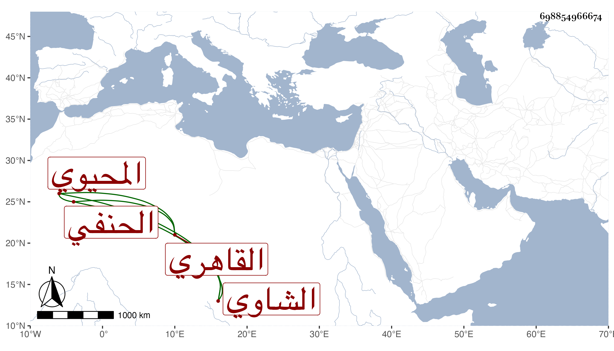

0902Sakhawi.DawLamic.ITO20230111-ara1.EIS1600.698854966674
Biography ID: 698854966674
766
عبد القادر بن محمد بن طريف بالمهملة كرغيف المحيوي بن الشمس الشاوي بالمعجمة القاهري الحنفي أخو عبد الوهاب ووالد أحمد . ممن أخذ الفرائض والحساب عن الكلائي وأذن له وقال شيخنا في المشتبه سمع معنا وكان خيارا ووصفه بصاحبنا . مات قريبا من سنة خمس وبلغني أن لطريف ضريح بشاوة لكونه كان معتقدا .
